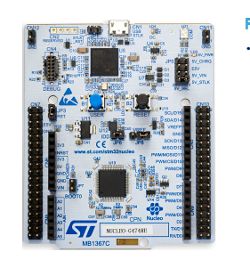

Embedded C++
Introduction to C++
Devlopment tools
| Vendor | C++ Standard |
|---|---|
| Keil | C++11 |
| ARM | C++14 |
| IAR | C++14 |
| GCC | C++17 |
Debug Tools
OpenOCD and STM GDB server
http://openocd.org/doc/html/index.html
OpenOCD is a Open On-Chip debugger that provides programming,debugging boudry-scan testing for embedded device. It acts as a server and acceptss incoming connection from GDB via port 3333 or telnet port 4444.
Setup

Setup
Nucleo-F767ZI

Features
- 3 User LED
- On board ST Link extension board for easy debugging
- Mass storage
- Virtual COM port
- Flexible power supply options
- Ethrnet RJ45
Nucleo-F303RE

Features
- 1 User LED
- On board ST Link extension board for easy debugging
- Mass storage
- Virtual COM port
- Flexible power supply options
Installing GCC cross compiler
- Go to the https://developer.arm.com
- Click on Tools and software >> Open source Software >> GNU toolchain
- Downlaod ARM GNU embedded toolchain as per your host platform (only 32 bit toolchains are available now)
Verify installation
arm-none-eabi-g++ --version
Build Process
STM32F103 board
Evaluation firmware
https://my.st.com/content/my_st_com/en/products/embedded-software/mcu-mpu-embedded-software/stm32-embedded-software/stm32cube-mcu-mpu-packages/stm32cubef4.license=1562567706435.product=STM32CubeF4.version=1.24.0.html https://my.st.com/content/my_st_com/en/products/embedded-software/mcu-mpu-embedded-software/stm32-embedded-software/stm32cube-mcu-mpu-packages/stm32cubef7.html#resource
stlink
WARNING
Please make sure not to connect both external 5 volts power supply and USB power supply at same time.
ST link usb drive
Download usb driver from https://my.st.com/content/my_st_com/en/products/development-tools/software-development-tools/stm32-software-development-tools/stm32-utilities/stsw-link009.license=1564137466456.product=STSW-LINK009.version=2.0.1.html Run stlinkwinusbinstall batch file to install driver.
ST link utilities
Download st link utility from https://my.st.com/content/my_st_com/en/products/development-tools/software-development-tools/stm32-software-development-tools/stm32-programmers/stsw-link004.html
Debug Server
OpenOCD
GDB Server
Hello World
Write Program
Compliling
Linking
Loading firmware to target
Converting to binary
ELf file consists of additional header informatio. but to load binary on target flash we need to strip down this additional information.
arm-none-eabi-objcopy -I elf -O binary firmware.elf firmware.bin
Programming Controller
st-link_cli -C SWD -P firmware.bin 0x8000000 -V "after_programming"
Linker scripts describes the
Debug
Start GDB server
load elf
Debug
C++ 14
C++ standard evolved more rapidly after release of 2011
Use namespece
Explain how we can use namespace to simplify naming of common static functions. #+SRCBEGIN C++
#+SRCEND
Strongly typed
enum class
Function Inline
Macros can be replaced with strongly typed
Type Conversions
dynamiccast
reinterpretcast
staticcast
constcast
static asserts
This will help in compile time catching of errors.
Mixing C and C++ libraries
Templates
std::Array
std::tuple
Referances
Gnu C
Predefined macros
https://gcc.gnu.org/onlinedocs/cpp/Common-Predefined-Macros.html
Keil library
run time library support
http://www.keil.com/support/man/docs/armlib/armlib_chr1358938908603.htm
C++ libraries need C libraries for target specific support.